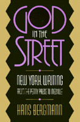

<body bgcolor="#FFFFFF" text="#000000" link="#0000FF" vlink="#CC0000" alink="#CC0000"><center><hr width="350" size="1" align="center" noshade>New York City, as literary subject, sets the stage for this study of urban literature<hr width="350" size="1" align="center" noshade><p><a href="https://cdcshoppingcart.uchicago.edu/Cart/ChicagoBook.aspx?ISBN=9781566393577&&PRESS=temple" target="_top">Buy this book!</a> | <a href="https://cdcshoppingcart.uchicago.edu/Cart/Cart.aspx?PRESS=temple" target="_top">View Cart</a> | <a href="https://cdcshoppingcart.uchicago.edu/Cart/Cart.aspx?PRESS=temple" target="_top">Check Out</a></p><p></p></center><!--none//--><h1>God in the Street</h1>
<H2>New York Writing from The Penny Press to Melville</H2>
<h3>Hans Bergmann</h3>
<P>cloth 1-56639-357-4 $90.50, Nov 95, <FONT COLOR=#990033>Available</FONT>
<br>paper 1-56639-358-2 $35.95, Nov 95, <FONT COLOR=#990033>Available</FONT>
<BR> 272 pp
6x9
4&nbsp;figures 5&nbsp;halftones
</P><BLOCKQUOTE><I>"This is a fine book&#151gracefully written, fresh in its approach to antebellum literature, and persuasive in its readings of Melville within a rich sense of history and social context."</I>
<br>&#151<b>Barbara Melosh</b>, George Mason University<I></I></BLOCKQUOTE>
<p>In the fast changing culture of antebellum New York, writers of every stripe celebrated "the City" as a stage for the daily urban encounter between the familiar and the inexplicable. Probing into these richly varied texts, Hans Bergmann uncovers the innovations in writing that accompanied the new market society&#151 the penny newspapers' grandiose boastings, the poetic catalogues of Walt Whitman, the sentimental realism of charity workers, the sensationalism of slum visitors, and the complex urban encounters of Herman Melville's fiction.
<p>The period in which New York, the city itself, became firmly established as a subject invented a literary form that attempts to capture the variety of the teeming city and the <i>flaneur</i>, the walking observer. But Bergmann does not simply lead a parade of images and themes; he explores the ways in which these observers understood what was happening around them and to them, always attentive to class struggle and race and gender issues.
<p><i>God in the Street</i> shows how the penny press and Whitman's New York poetry create a new mass culture hero who interprets and dignifies the city's confusions. New York writers, both serious and sensationalist, meditate upon street encounters with tricksters and confidence-men and explore the meanings of encounters. Melville's "Bartleby, the Scrinever" underlines the unrelenting isolation and inability to control the interpreter. Bergmann reinterprets Melville's <i>The Confidence Man</i> as an example of how a complex literary form arises directly from its own historical materials and is itself socially symbolic. Bergmann sees Melville as special because he recognizes his inability to make sense of the surface of chaotic images and encounters. In mid-century New York City, Melville believes God is in the street, unavailable and unrecognizable, rather than omnipresent and guiding.
<BR>&nbsp;<h2>Excerpt</h2><P>Excerpt available at <a href="http://www.temple.edu/tempress">www.temple.edu/tempress</a></p>
<BR>&nbsp;<h2>Reviews</h2>
<p><i>"As informative as it is informing, </I>God in the Street<I> draws us into the complexities of the New York encounter in which raw urban life of the 1840s and 1850s and America's growing literary aesthetic interact to form a distinctive genre, the 'New York discourse.' With the erudition and grace of a practiced scholar-critic, Bergmann recovers in rich detail the literary transformations of New York's mean streets into Penny Press sketches, verbal panoramas, cony-catching stunts, flaneuristic 'feuilletons,' guidebooks, poems, and novels; out of which eventually emerge the exuberance and doubt of Whitman and Melville. Full of provocative readings and careful contextualization, this is sure to be a lasting contribution to 19th century American studies."</i>
<br>&#151<b>John Bryant</b>, Hofstra University
<BR>&nbsp;<h2>Contents</h2><P>
<p>List of Illustrations
<br>Acknowledgments
<br>Prologue: The Man in Cream-Colors
<br><b>Part I: Panorama</b>
<br>1. The Penny Press: Anecdotes of New York
<br>2. Windows on the World: Guides to New York
<br>3. Walt Whitman: Over the Roofs of the World
<br><b>Part II: "Dickens' Place"</b>
<br>4. "Hot Corn!": Encounters with Street Children
<br>5. Five Points: Sketches of Hell
<br><b>Part III: "Do You Not See the Reason for Yourself?"</b>
<br>6. <I>Putnam's</I> and New York Stories
<br>7. Key: "Bartleby, the Scrivener"
<br><b>Part IV: Awake in Our Sleep?</b>
<br>8. Peter Funk: Tales of Exchange
<br>9. "We Golden Boys, the Moderns": <I>The Confidence Man</I>
<br>Notes
<br>Index
</P><BR>&nbsp;<H2>About the Author(s)</H2>
<table><tr><td valign="top"><img src="/tempress/authors/1177_au.gif" height="90" width="75"></td><td width="100%" valign="middle"><p><b>Hans Bergmann</b> is Professor of English and Cultural Studies at George Mason University.</P></td></tr></table>
<BR><H2>Subject Categories</H2>
<p><A HREF="/tempress/american.html" TARGET="_top">American Studies</a>
<BR><A HREF="/tempress/literature.html" TARGET="_top">Literature and Drama</a>
</p>
<p align="center"><a href="https://cdcshoppingcart.uchicago.edu/Cart/ChicagoBook.aspx?ISBN=9781566393577&&PRESS=temple" target="_top">Buy this book!</a> | <a href="https://cdcshoppingcart.uchicago.edu/Cart/Cart.aspx?PRESS=temple" target="_top">View Cart</a> | <a href="https://cdcshoppingcart.uchicago.edu/Cart/Cart.aspx?PRESS=temple" target="_top">Check Out</a></p><p><font face="Arial" size="1"><a href="copyright.html" onMouseOver="window.status='Web Copyright Policy';return true;" onMouseOut="window.status=''" title="Web Copyright Policy">&copy;</a> 2015 <a href="http://www.temple.edu" target="new" onMouseOver="window.status='Link to Temple University home page';return true;" onMouseOut="window.status=''" title="Link to Temple University home page">Temple University</a>. All Rights Reserved. http://www.temple.edu/tempress/titles/1177_reg.html</font></p>